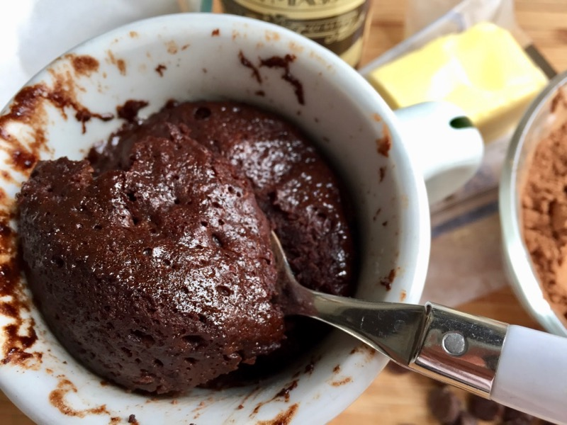

Chocolate Mug Souffle

Description
Quick and easy, 2 minute chocolate mug souffle. Only needs a handful of ingredients and we cook it in microwave in just a minute!
Ingredients:
- 1 tablespoon of butter.
- 1 Large egg
- Few drops of vanilla extract
- 2 tablespoons + 2 teaspoons cococa powder
- 2 tablespoons of sugar
- Chocolate chips, optional
- Nutella, optional
- Vanilla ice cream as topping, optional
Steps:
- Put butter in a microwave-safe mug and microwave for 30 seconds on high power.
- Swirl mug a bit to grease the sides with the melted butter.
- Crack in the egg and a few drops of vanilla; whisk with a fork until blended.
- Add the cocoa powder and sugar and whisk with the fork until well combined.
- The mug will get messy inside, so scrape as much batter down with a rubber spatula as possible.
- Add Nutella and fold a few times or sprinkle some chocolate chips on top for extra ooeyness.
- Microwave 1 minute on high power and serve warm, with a scoop of ice cream on top if there’s room.